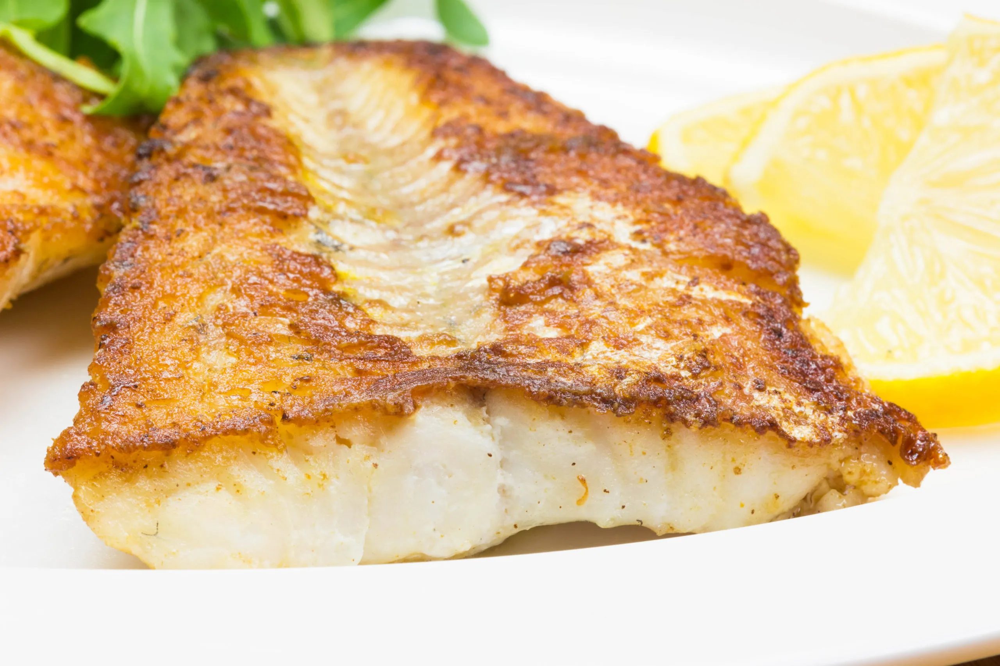

I am a big fish person, but I have to say, grouper is something truly special. I use the more readily available red grouper, a white fish from the sea bass family. It's lean, moist, and has a mild and slightly sweet flavor.
Grouper lends itself to a variety of preparations. This time, I obviously went for baked grouper, a healthy and light option for those who are looking for a low-carb meal.
